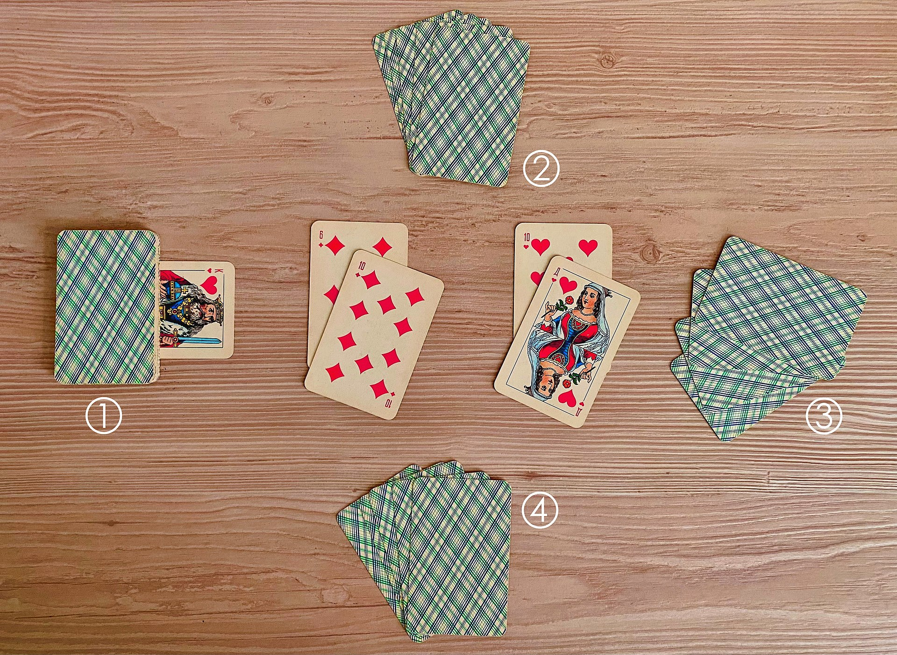

Feb 19. 2026
Left to their own devices
Observer: Aiden
Thomas
Teacher: Eric Baez
Reflections on Classroom Observation
This week, Eric continued to provide me with a comprehensive set of
student expectations, which outlined the submission criteria required
for the AP Computer Science Principles (APCSP) program. A challenge I
faced today was that some students already submitted, so they were not
interested in anything really and were looking for wallpapers. As a
result, I taught them the Russian Card game Durak, I
noticed a meaningful overlap between the two courses and thought they
might want to build a card game as another portfolio submission, as
students would draw upon programming techniques and tools introduced in
Video Game Design to fulfill their APCSP portfolio requirements. This
highlighted the natural transferability of skills, even when the work
extends beyond the boundaries of the original curriculum.
Adaptabilityproblem-label
Below is an image of Durak.

Moving forward, I intend to refine my approach to assignment design and structure, ensuring that tasks are more accessible and relevant to students who are just beginning their journey with computer science. Comfortability: 7/10 I selected this rating because I recognize that I still need to recalibrate my expectations when working with students who have had significantly less exposure to programming compared to those at the college level.